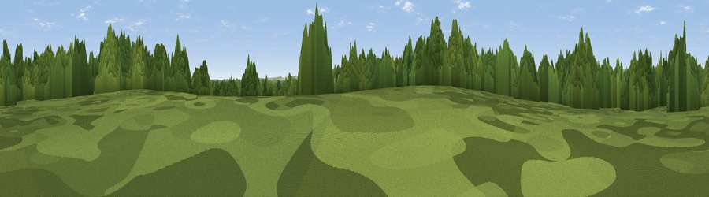

Viewpoint near Newtown
#44862 in England · top 92% of its area beats it · near NewtownWhere it is
The exact computed spot (SU 60262 13459). Click the marker for map links.
The view, rendered

A 360° render of this exact spot computed from the terrain model, tree cover and land cover — summer colours, afternoon light, calibrated against photographs of famous viewpoints. Real trees, hedges and buildings will differ in detail.
The panorama
Grey silhouette: terrain skyline in each direction (720 bearings, Earth curvature and refraction included). Dashed green: skyline with trees (+15 m) and buildings (+8 m) as obstacles. Blue strip: how far the ground is visible on each bearing.
Where the view opens
Wedge length = distance to the farthest visible ground on that bearing (vegetation-aware). Rings at 10, 25 and 50 km.
What fills the view
61% woodland · 27% grassland · 9% cropland · 3% built-up
Angular shares of the visible panorama (visual magnitude), not map area. Landscape diversity 0.42 (0–1 Shannon).
Key numbers
More beautiful places nearby
The staircase of upgrades: each row has a higher view potential than everything closer. Driving times are estimates from straight-line distance, calibrated against real road routing — check an actual route before setting out.
| Place | Direction | Drive | Score |
|---|---|---|---|
| Viewpoint near Newtown | S · 1 km | ~3 min | 25.8 |
| Viewpoint near North Boarhunt | SSW · 2 km | ~5 min | 28.5 |
| Crockerhill | SW · 4 km | ~9 min | 44.2 |
| Home Down | NE · 4 km | ~10 min | 49.5 |
| Viewpoint near Droxford | N · 5 km | ~11 min | 58.5 |
| Viewpoint near Southwick | SSE · 8 km | ~15 min | 74.3 |
| Viewpoint near Southwick | SSE · 8 km | ~16 min | 76.6 |
| Viewpoint near Buriton | ENE · 13 km | ~24 min | 80.0 |
50.91746, -1.14410 · source: osm peak · position refined by local search. Computed location — check access rights before visiting.